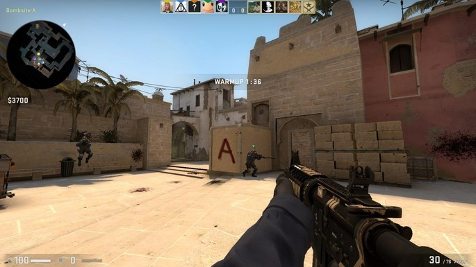
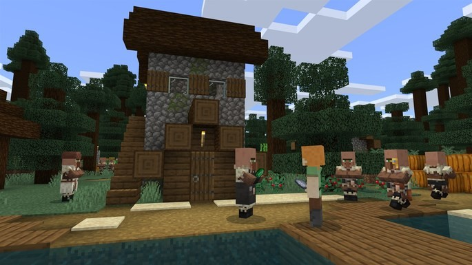

Los Juegos Multijugador más jugados en la actualidad (2022)
Estos son los juegos perfectos si quieres jugar un juego que tenga una comunidad grande y activa. sobre todo para que é plataformas están disponibles estos juegos, para que disfrutes de los mejores títulos con tus amigos y jugadores de todo el mundo.
Counter-Strike: Global Offensive
CS:GO (Counter-Strike: Global Offensive) mantiene su pie bien apretado sobre el acelerador. Cientos de miles de jugadores juegan diariamente a este shooter competitivo. La puntería, reflejos y control de retroceso de las armas son tres aspectos a dominar si uno quiere ganar partidas. Al ser un juego por equipos, la cooperación y anticipación también son vitales.
Minecraft
Plataformas: PC, Wii U, Nintendo Switch, Nintendo 3DS, Xbox 360, Xbox One, PlayStation 3, PlayStation 4, PlayStation Vita, Android e iOS.
Minecraft es el juego perfecto para vivir mil y una aventuras con tus amigos. Es un juego de supervivencia que hace mucho hincapié a la exploración, combate, creación de ítems y construcción de edificios. En Minecraft, los únicos límites son tu imaginación... y los puntos de vida. ¡No hay que ser ingenuo! Los mods y servidores personalizados son la base de una comunidad fuerte. Una vez empieces a jugar, ¡siempre encontrarás algo que hacer!
Cosas que puedes hacer si tu aburres:
- Jugar Videojuegos
- Mirar videos de youtube
- Programar
- Navegar en la WEB
- No Navegar en la
Deepweb